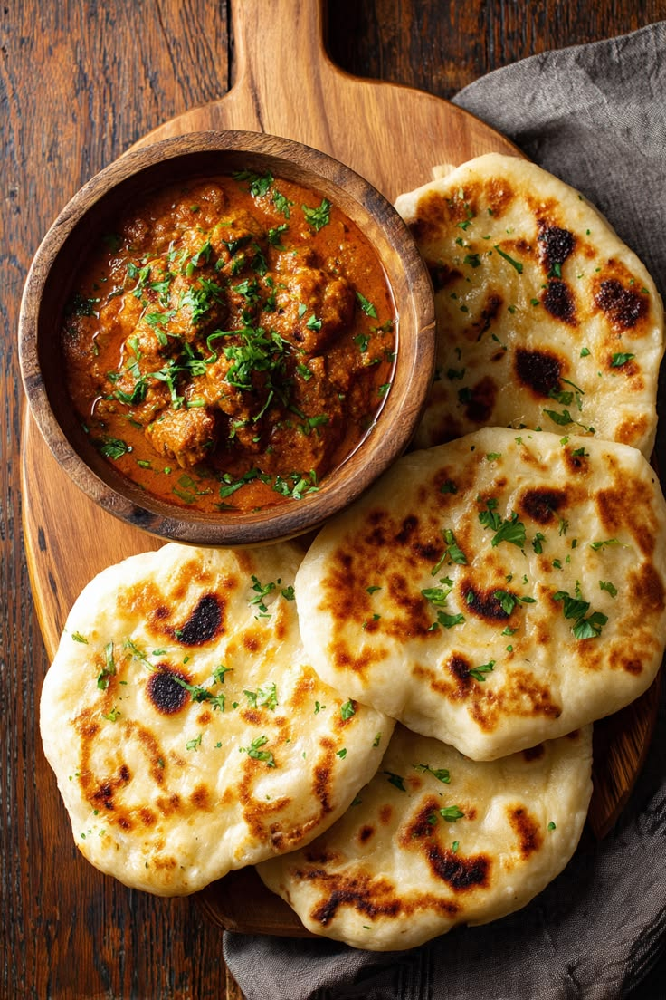

Culture on a plate
Chapati arrived in East Africa with Indian migrants who came to the Swahili coast and to build the Kenya–Uganda railway in the late 19th and early 20th centuries. East African cooks made it their own: the dough is rolled, oiled, coiled and rolled again, which gives the bread its flaky layers.
Today chapati is eaten in Kenya, Tanzania, Uganda and Rwanda with beans, stews, tea or sukuma wiki greens. In Kenya it is a special treat at Christmas and family gatherings, and in Uganda a chapati rolled around an omelette becomes the famous street snack, the rolex.
Discover more dishes from this region on our East Africa page.

Cooking instructions
Make the dough
Mix the flour, salt and sugar in a large bowl. Add 2 tablespoons of oil, then pour in the warm water a little at a time, mixing until a soft dough forms.
Knead and rest
Knead on a floured surface for 8–10 minutes until smooth and stretchy. Cover and rest for 30 minutes, resting makes the chapatis soft.
Roll, oil and coil
Divide the dough into 8 balls. Roll each into a thin circle, brush with oil, then roll it up like a rope and coil the rope into a snail shape. Rest for 10 minutes. This step creates the layers.
Roll out again
Flatten each coil and roll it into a circle about 20 cm wide.
Cook in a hot pan
Heat a dry, heavy pan over medium-high heat. Cook each chapati for about 1 minute until bubbles appear, flip, brush with oil, flip again and press gently with a spatula until both sides have golden-brown spots.
Keep them soft
Stack the cooked chapatis in a basket or wrap them in a clean cloth so the steam keeps them soft. Serve warm.
Cook's tip: If your chapatis come out hard, the dough was too dry or the pan too cool. Add a little more water to the dough and cook quickly on a hot pan.
Nutritional information
| Nutrient | Amount |
|---|---|
| Calories | 430 kcal |
| Carbohydrates | 62 g |
| Protein | 9 g |
| Fat | 16 g |
| Fibre | 2 g |